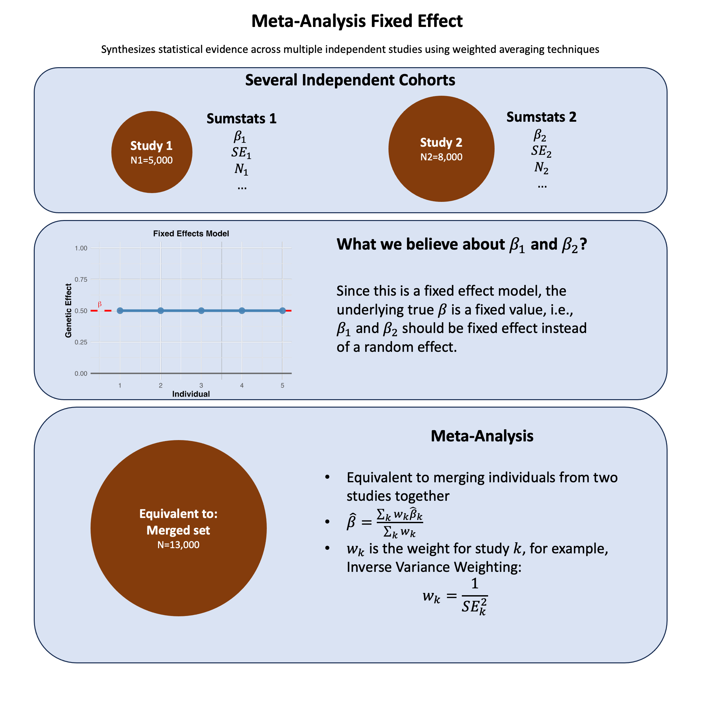

Fixed Effects Meta-Analysis#
Fixed-effect meta-analysis combines study-specific estimates under the assumption of a common fixed true effect, making it mathematically equivalent to analyzing all individuals as if they came from a single pooled dataset.
Graphical Summary#

Key Formula#
In meta-analysis, the weighted mean effect size for a fixed-effects model is calculated as:
Where:
\(\hat{\beta}\) is the combined effect estimate across all studies
\(\hat{\beta}_i\) is the effect estimate from study \(i\)
\(w_i\) is the weight assigned to study \(i\)
\(k\) is the number of studies
Technical Details#
Multiple Fixed-Effects Models#
Weights for Fixed-Effects $\(w_i = \frac{1}{v_i}\)\( Where \)v_i\( is the within-study variance for study \)i$
Variance of the Combined Estimate $\(Var(\hat{\beta}) = \frac{1}{\sum_{i=1}^{k} w_i}\)$
Standard Error of the Combined Estimate $\(SE(\hat{\beta}) = \sqrt{Var(\hat{\beta})} = \sqrt{\frac{1}{\sum_{i=1}^{k} w_i}}\)$
Multiple Random-Effects Models#
Weighted Mean Effect Size $\(\hat{\beta}^* = \frac{\sum_{i=1}^{k} w_i^* \hat{\beta}_i}{\sum_{i=1}^{k} w_i^*}\)$
Weights for Random-Effects $\(w_i^* = \frac{1}{v_i + \tau^2}\)$
Where \(\tau^2\) is the between-study variance
Meta-Analysis in Genetic Studies#
In genetic studies, meta-analysis often combines results from genome-wide association studies (GWAS) across different cohorts with weights either from the sample size or the inverse variance:
Sample Size Weighting $\(w_i = \sqrt{N_i}\)$
Where \(N_i\) is the sample size of study \(i\)
Inverse Variance Weighting $\(w_i = \frac{1}{SE(\hat{\beta}_i)^2}\)$
Where \(SE(\hat{\beta}_i)\) is the standard error of the effect size estimate in study \(i\)
Example#
This example demonstrates a meta-analysis of genetic variants across two European cohorts. We’ll analyze 3 genetic variants (SNPs) that have been genotyped in both cohorts and combine their effects using fixed-effects meta-analysis.
We first generate the summary statistics for 3 variants from two independent European cohorts with different sample sizes (N=8000 and N=5500), and assuming that they are from the same genetic ancestry so they can be meta-analyzed.
Then we perform fixed-effects meta-analysis combining results using:
Sample size weighting (weight proportional to \(\frac{1}{\sqrt{N}}\))
Inverse variance weighting (weight = \(\frac{1}{\text{SE}^2}\))
Lastly we plot the effect size and p-values for each variant and compare the results from separate cohorts and meta-analysis results. We also compare the variance based on the sample size and inverse variance.
rm(list=ls())
set.seed(123)
# 1. Simulate genotype data (0/1/2) for a single SNP
N1 <- 5000
N2 <- 8000
maf1 <- 0.3
maf2 <- 0.35
variant_pop1 <- rbinom(N1, 2, maf1)
variant_pop2 <- rbinom(N2, 2, maf2)
# 2. Simulate phenotype with fixed effect beta=1 and noise
beta <- 1
y_pop1 <- beta * variant_pop1 + rnorm(N1, 0, 3)
y_pop2 <- beta * variant_pop2 + rnorm(N2, 0, 3)
# 3. Run regression in each population
lm_pop1 <- lm(y_pop1 ~ variant_pop1)
lm_pop2 <- lm(y_pop2 ~ variant_pop2)
# Extract summary statistics
beta_pop1 <- coef(lm_pop1)["variant_pop1"]
se_pop1 <- summary(lm_pop1)$coefficients["variant_pop1", "Std. Error"]
beta_pop2 <- coef(lm_pop2)["variant_pop2"]
se_pop2 <- summary(lm_pop2)$coefficients["variant_pop2", "Std. Error"]
# 4. Fixed-effect meta-analysis
w1 <- 1 / se_pop1^2
w2 <- 1 / se_pop2^2
beta_meta <- (beta_pop1 * w1 + beta_pop2 * w2) / (w1 + w2)
se_meta <- sqrt(1 / (w1 + w2))
z_meta <- beta_meta / se_meta
p_meta <- 2 * pnorm(-abs(z_meta))
res_meta = data.frame(beta_meta, se_meta, z_meta, p_meta)
rownames(res_meta) = NULL
res_meta
| beta_meta | se_meta | z_meta | p_meta |
|---|---|---|---|
| <dbl> | <dbl> | <dbl> | <dbl> |
| 0.9872088 | 0.03999143 | 24.68551 | 1.530562e-134 |
Alternatively we can simply combine all individuals into one and calculate the summary statistics for this variant.
# 5. Pooled analysis
variant_all <- c(variant_pop1, variant_pop2)
y_all <- c(y_pop1, y_pop2)
lm_all <- lm(y_all ~ variant_all)
beta_all <- coef(lm_all)["variant_all"]
se_all <- summary(lm_all)$coefficients["variant_all", "Std. Error"]
z_all <- beta_all / se_all
p_all <- 2 * pnorm(-abs(z_all))
res_merged = data.frame(beta_all, se_all, z_all, p_all)
rownames(res_merged) = NULL
res_merged
| beta_all | se_all | z_all | p_all |
|---|---|---|---|
| <dbl> | <dbl> | <dbl> | <dbl> |
| 0.9845484 | 0.03986773 | 24.69537 | 1.199156e-134 |
# 6. Compare results
res_meta
res_merged
| beta_meta | se_meta | z_meta | p_meta |
|---|---|---|---|
| <dbl> | <dbl> | <dbl> | <dbl> |
| 0.9872088 | 0.03999143 | 24.68551 | 1.530562e-134 |
| beta_all | se_all | z_all | p_all |
|---|---|---|---|
| <dbl> | <dbl> | <dbl> | <dbl> |
| 0.9845484 | 0.03986773 | 24.69537 | 1.199156e-134 |
The results are identical.
Supplementary#
slide 146 in Hailiang Huang’s slides
slide 244-246 from GW
Heterogeneity Assessment#
Heterogeneity assessment is a crucial component of meta-analysis because it evaluates whether the observed effect sizes across different studies are more variable than would be expected by chance alone. This helps us understand if we’re truly measuring the same effect across studies or if there are underlying differences. Below are several ways to measure it.
Cochran’s Q Statistic:#
This statistic follows a \(\chi^2\) distribution with \(k-1\) degrees of freedom under the null hypothesis of homogeneity.
\(I^2\) Statistic (Percentage of Variation Due to Heterogeneity)#
Interpretation:
0-25%: Might not be important
25-50%: Moderate heterogeneity
50-75%: Substantial heterogeneity
75-100%: Considerable heterogeneity